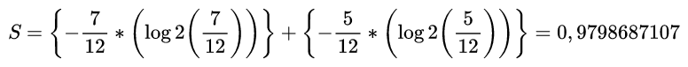
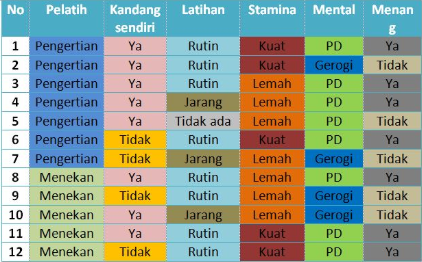
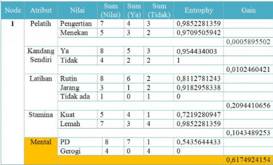
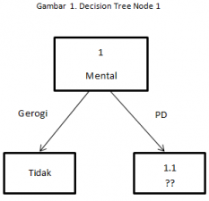
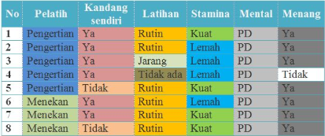
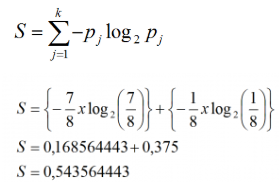
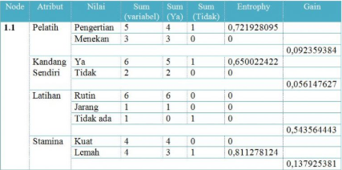
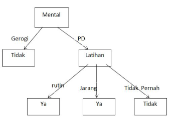

Metode Decision Tree¶
Pengertian Decision Tree¶
Secara singkat bahwa Decision Tree merupakan salah satu metode klasifikasi pada Text Mining. Klasifikasi adalah proses menemukan kumpulan pola atau fungsi-fungsi yang mendeskripsikan dan memisahkan kelas data satu dengan lainnya, untuk dapat digunakan untuk memprediksi data yang belum memiliki kelas data tertentu (Jianwei Han, 2001).
Decision tree memetakan berbagai alternatif yang mungkin untuk mengatasi suatu masalah, dan terdapat juga faktor-faktor kemungkinan yang dapat mempengaruhi alternatif tersebut beserta estimasi akhirnya jika memilih alternatif yang ada. Decision tree dimulai dengan sebuah root node(titik awal) yang dipakai oleh user untuk mengambil tindakan. Dari node root ini, user memecahnya sesuai dengan algoritma decision tree. Hasil akhirnya adalah sebuah decision tree dengan setiap cabangnya menunjukkan kemungkinan sekenario dari keputusan yang diambil serta hasilnya.
Algoritma Perhitungan Decision Tree¶
- Menghitung Entropy total Dataset
- Menghitung Entropy dan Gain tiap atribut
- Membuat table perhitungan Node
- Membuat Node dengan hasil Gain tertinggi dari table
- Mengulangi langkah 2 - 5 hingga tidak ada node lagi
Rumus Entropy¶
Entropy mengukur ketidakpastian suatu variabel acak. Entropy menggunakan konsep probabilitas dalam menentukan besar entropy suatu kejadian. Kata entropi pertama kali dicetuskan oleh Rudolf Clausius pada tahun 1865, berasal dari bahasa Yunani εντροπία [entropía], εν- [en-] (masuk) dan τροπή [tropē] (mengubah, mengonversi).
Contoh Perhitungan Sederhana¶
Jumlah nilai Class benar dan salah :
- Benar : 7
- Salah : 5
 $$ S=\left{-\frac{7}{12} *\left(\log 2\left(\frac{7}{12}\right)\right)\right}+\left{-\frac{5}{12} *\left(\log 2\left(\frac{5}{12}\right)\right)\right}=0,9798687107 $$
Rumus Gain Ratio¶
Gain merupakan sebuah sebuah pengurangan entrophy yang disebabkan oleh partisi berdasarkan suatu atribut. alam machine learning, ini dapat digunakan untuk menentukan urutan atribut atau mempersempit atribut yang dipilih. Urutan inilah yang akan membentuk pohon keputusan (decession tree).

Contoh Kasus¶
Diketahui dataset adalah sebagai berikut :

Atribut : Pelatih, kandang sendiri, latihan, stamina, mental Kelas : Menang = ya atau tidak Jumlah data ada 12, terdiri dari : Ya = 7 Tidak = 5
1.Menghitung Entropy Total Dataset¶
Berikut perhitungan Entropy :
2. Menghitung Entropy dan Gain Tiap Atribut¶
Perhitungan Entropy tiap atribut:


Tabel Perhitungan Node 1

dapat dilihat bahwa nilai gain terbesar adalah Gain pada atribut Mental, maka Mental yang akan menjadi node akar (root node).
Ada dua nilai dari atribut Mental yaitu PD dan Gerogi. Nilai atribut Gerogi sudah mengklasifikasikan kasus menjadi satu yaitu keputusannya “Tidak”, sehingga tidak perlu dilakukan perhitungan lebih lanjut. Tetapi untuk nilai atribut PD masih perlu dilakukan perhitungan lagi , karena masih terdapat “Ya” dan “Tidak”.
Gambar decision tree sementara :

Berdasarkan pembentukan decision tree diatas, Node 1.1 akan dianalisis lebih lanjut. Berikut tabel data yang memiliki atribut Mental = PD

3. Menghitung Entropi Total dari Dataset Node 1.1 :¶

4. Menghitung Entropi dan Gain dari Keseluruhan Atribut Node 1.1 :¶

Selanjutnya menentukan atribut yang memiliki gain tertinggi untuk dibuatkan node berikutnya. Gain tertinggi adalah Latihan, sebesar 0.5435644433. Ada tiga nilai dari atribut Latihan yaitu Rutin, Jarang, dan Tidak ada. Nilai atribut Rutin sudah mengklasifikasikan kasus menjadi satu yaitu keputusannya “Ya” , nilai atribut Jarang juga sudah mengklasifikasikan kasus menjadi satu yaitu keputusannya “Ya”, sedangkan nilai atribut Tidak ada mengklasifikasi kasus menjadi satu, yaitu keputusannya “Tidak”, sehingga tidak perlu melakukan perhitungan lebih lanjut.
Dengan demikian decision tree akan tampak seperti berikut :

Link Refrensi¶
https://garudacyber.co.id/artikel/1545-pengertian-dan-penerapan-decision-tree
http://newbiegameku.blogspot.com/2014/07/pengertian-decision-tree.html
http://dyan123.blogspot.com/2012/03/pengertian-decision-tree.html
http://student.blog.dinus.ac.id/devina09/2017/04/18/perhitungan-decision-tree-dengan-algoritma-c45/
https://id.wikipedia.org/wiki/Entropi
https://rahmadya.com/2014/09/23/entropy/
http://itmbali.blogspot.com/2012/10/decision-tree-menggunakan-weka.html